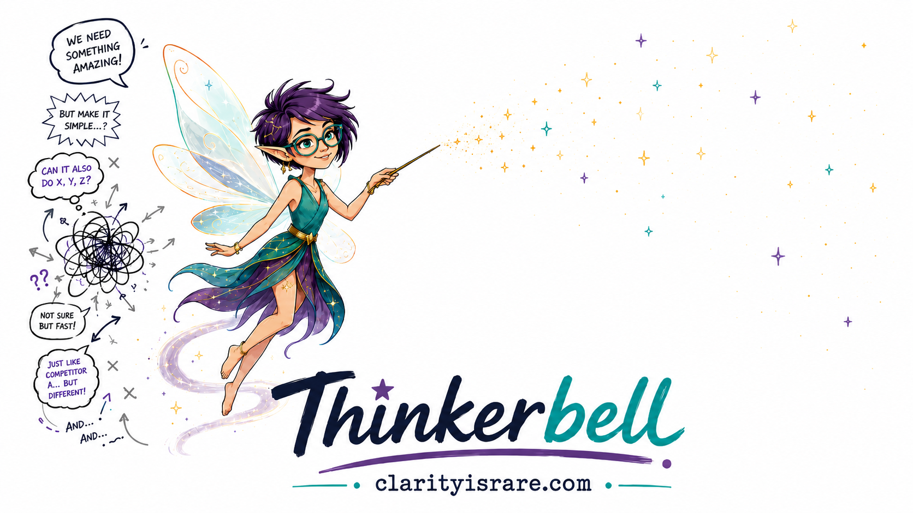
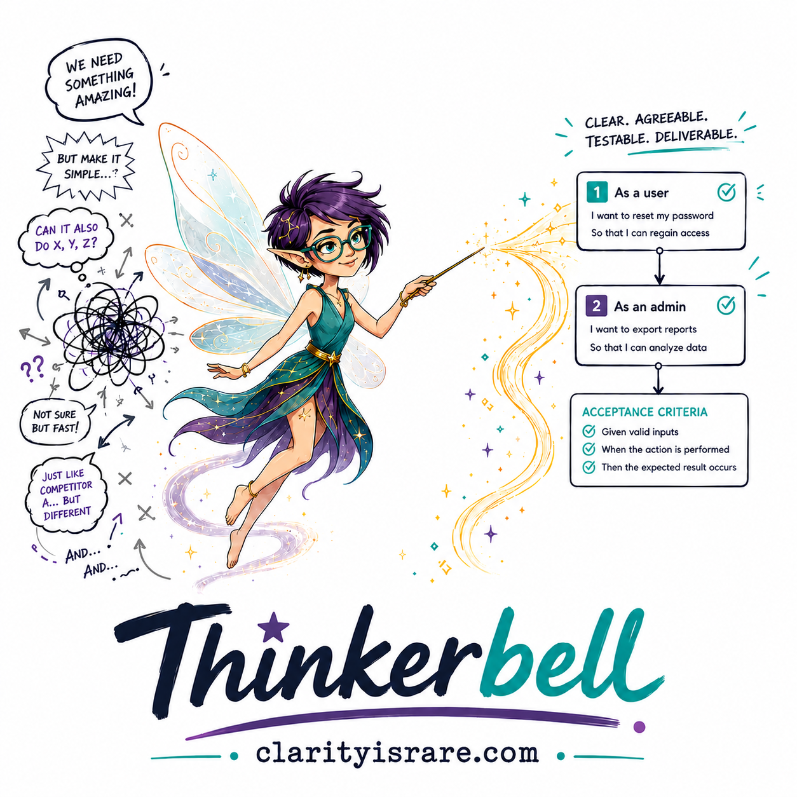
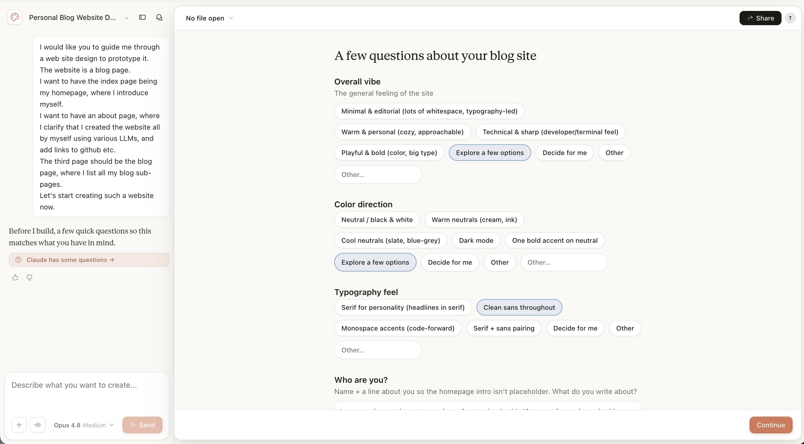

Hello, I am {{ authorName }}, your Requirements Engineering blogger.
I'm a senior requirements engineer who's worked across start-ups, SMEs and global players, from process to regulatory. I write about making requirements clear enough for people and machines.
Recent posts
All posts →
I am {{ authorName }}, and this is where I write about requirements engineering, the work of turning what a business wants into something a system can actually do. That work is changing quickly, and this page is partly an argument about how. It is also a small illustration of it. I built this whole site myself. A few years ago that would have taken real effort and a long technical slog; today the AI does the main building work, while my part is to direct it and decide when it is right. What changed is not that I became a developer. What changed is where the hard part of the work now sits.
Who I am
I have spent most of two decades helping people work out what they actually want, which is seldom what they first asked for, and turning it into something a system can be told precisely. My analysis career began in operations, settling over-the-counter derivatives, automating their processes and building the databases that kept the trades honest. I worked on regulatory programmes when new rules arrived faster than anyone could reasonably implement them, helped stand up the operations of a bank that was opening its doors, and then moved into business analysis and requirements engineering as a profession in its own right, where I have stayed. Today I handle cross-stream initiatives at a large bank, which is a polite way of saying I am given the problems that touch everything and belong to no one.
None of this is my first change of medium. In the early internet era, when the web was young and mostly ugly, I ran my own web-design company, bytelab.net. I have watched one way of building give way to another before, and I have learned not to mourn the old one for too long.
More recently I put real effort into learning to work with AI properly. The certificates are on my LinkedIn, but the point behind them is simple. I wanted to understand the tools well enough to direct them, not just prompt them and hope.
What I built, and what it shows
This site runs on Astro, lives on GitHub, and deploys through Cloudflare. I wrote very little of its code by hand. I described what I wanted to Claude, read what it produced, corrected it, and decided when it was right. I have basic Python, SQL and HTML skills, enough to follow along and to know when an answer is merely plausible, but I would not call myself a developer, and I am not about to start.
Here is the honest version of what happened at each step.



A personal blog is not a trading platform, and the code an AI writes still has to be judged by someone who can tell almost-right from right. I spent this build doing exactly that: catching the answers that looked plausible and were not, sending back the design that could have been anyone's, deciding what "finished" actually meant. That last stretch, where you settle what the thing should do and then whether it truly does it, is the hard part, and it did not disappear. It moved. It moved toward specification, judgement, and knowing what good looks like, which is the work I already do.
That is the quiet argument of this whole page. AI did not replace my expertise. It relocated it, closer to the centre of what I am useful for. I am not threatened by this shift; I am made more valuable by it.
What this blog is and is not
Clarity Is Rare is about requirements engineering and the way our craft is changing. It takes a general view, not a report from any single industry. The name says it: clear requirements are rare, and worth writing about.
Nothing here is drawn from my work at any current or former employer. When you see an example, it is one that public research turned up, or one I have constructed to make a point, never something borrowed from a job. I keep that line bright on purpose.
Say hello
I write here as {{ authorName }}, which is a pen name, not a disguise. If you want to know who is behind it, my LinkedIn will tell you, along with the fuller version of the career I compressed into a paragraph above. You can also follow me on Bluesky at @clarityisrare.bsky.social. If something here was useful, or wrong, or you think your team could use someone who does this for a living, write to me.
Blog
{{ totalPostsText }}
{{ cat.title }}
{{ post.title }}
{{ post.subtitle }}
{{ b.text }}
{{ b.text }}
{{ b.text }}
{{ b.text }}
{{ b.text }}
{{ b.text }}
{{ b.text }}
{{ b.arrowRest }}